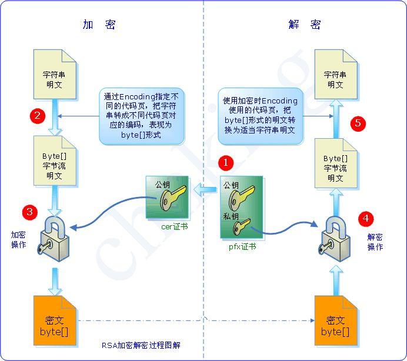
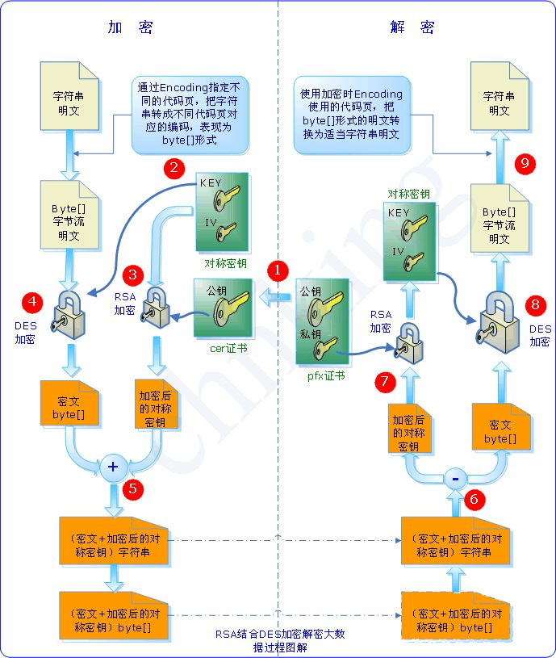

非对称加密初探-理解公钥和私钥
发布时间：
本文字数：100 字 阅读完需：约 1 分钟
理解公钥与私钥
一、公钥算法与私钥算法
1、私钥算法
私钥加密算法，又称 对称加密算法，因为这种算法解密密钥和加密密钥是相同的。也正因为同一密钥既用于加密又用于解密，所以这个密钥是不能公开的。常见的有《DES加密算法》、《AES加密算法》。
2、公钥算法
公钥加密算法，也就是 非对称加密算法，这种算法加密和解密的密码不一样，一个是公钥，另一个是私钥：
- 公钥和私钥成对出现
- 公开的密钥叫公钥，只有自己知道的叫私钥
- 用公钥加密的数据只有对应的私钥可以解密
- 用私钥加密的数据只有对应的公钥可以解密
- 如果可以用公钥解密，则必然是对应的私钥加的密
- 如果可以用私钥解密，则必然是对应的公钥加的密
公钥和私钥是相对的，两者本身并没有规定哪一个必须是公钥或私钥。
二、实现数据的安全传输
要实现数据的安全传输，当然就要对数据进行加密了。
如果使用对称加密算法，加解密使用同一个密钥，除了自己保存外，对方也要知道这个密钥，才能对数据进行解密。如果你把密钥也一起传过去，就存在密码泄漏的可能。所以我们使用非对称算法，过程如下：
- 首先 接收方 生成一对密钥，即私钥和公钥；
- 然后，接收方 将公钥发送给 发送方；
- 发送方用收到的公钥对数据加密，再发送给接收方；
- 接收方收到数据后，使用自己的私钥解密。
由于在非对称算法中，公钥加密的数据必须用对应的私钥才能解密，而私钥又只有接收方自己知道，这样就保证了数据传输的安全性。

三、对信息进行数字签名
除了保证数据的安全传输之外，公钥体系的另一个用途就是对数据进行签名。通常**“数字签名”**是用来验证发送方的身份并帮助保护数据的完整性。
例如：一个发送者 A 想要传些资料给大家，用自己的私钥对资料加密，即签名。这样一来，所有收到资料的人都可以用发送者的公钥进行验证，便可确认资料是由 A 发出来的了。（因为只有Ａ使用私钥签名得到的信息，才能用这个公钥来解） 采用数字签名，可以确认两点：
- 保证信息是由签名者自己签名发送的，签名者不能否认或难以否认。
- 保证信息自签发后到收到为止未曾作过任何修改。
之所以可以确认这两点，是因为用公钥可以解密的必然是用对应的私钥加的密，而私钥只有签名者持有。
四、公钥算法的缺点
现实中，公钥机制也有它的缺点，那就是效率非常低，比常用的私钥算法（如 DES 和 AES）慢上一两个数量级都有可能。所以它不适合为大量的原始信息进行加密。为了同时兼顾安全和效率，我们通常结合使用公钥算法和私钥算法：
- 首先，发送方使用对称算法对原始信息进行加密。
- 接收方通过公钥机制生成一对密钥，一个公钥，一个私钥。
- 接收方 将公钥发送给 发送方。
- 发送方用公钥对对称算法的密钥进行加密，并发送给接收方。
- 接收方用私钥进行解密得到对称算法的密钥。
- 发送方再把已加密的原始信息发送给接收方。
- 接收方使用对称算法的密钥进行解密。

总结：
-
每个用户都有一对私钥和公钥。
- 私钥用来进行解密和签名，是给自己用的。
- 公钥由本人公开，用于加密和验证签名，是给别人用的。
-
当该用户发送文件时，用私钥签名，别人用他给的公钥解密，可以保证该信息是由他发送的。即数字签名。
-
当该用户接受文件时，别人用他的公钥加密，他用私钥解密，可以保证该信息只能由他看到。即安全传输。
图片来源：http://www.cnblogs.com/chnking/archive/2007/08/30/875947.html
本文转自：https://songlee24.github.io/2015/05/03/public-key-and-private-key/ 讲的很好